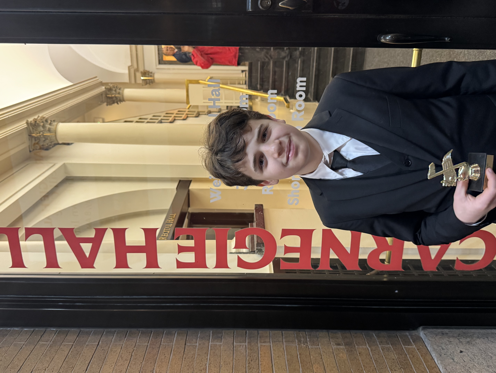
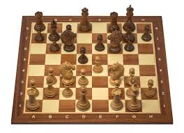
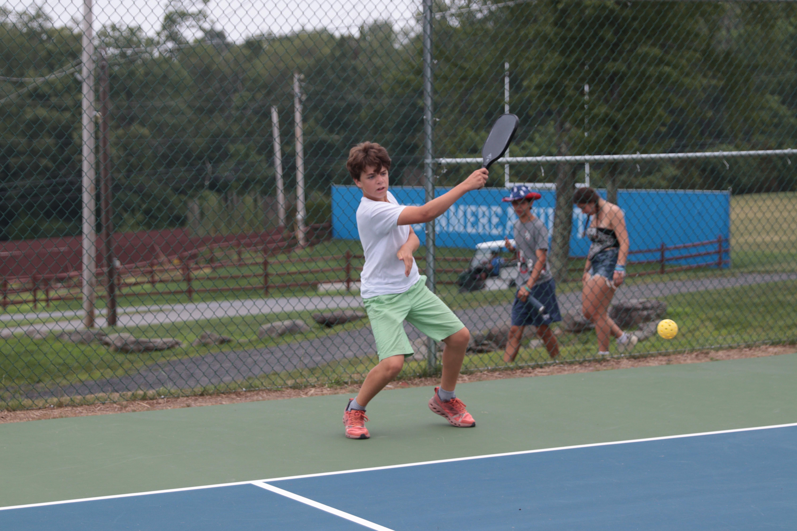

Music

When I was 8 years old, I started playing the piano. At first, I learned how to play
classical music first, and then learned how to play jazz and latin songs by
Latin American artists like Santana. Finally, for the last year, I have been
focosuing on improving my classical skills. Because of this, I landed a spot
at Carnegie hall this past April, 2025, for the first time. I plan to continue
playing piano for a while.
Games

For a few years, I have been playing chess. The reason I love to play this fun game
is because its challenging and requires the players to think hard about their moves.
In addition, many others play chess online and in championships, so I can always
have a fun and unique way to watch a chess master's games.
Sports

I love to stay active by doing sporty activities. One of my favorites
is playing pickleball. When I was at sleepaway camp for seven weeks
this summer, I played pickleball for more than two hours a day!
Now, I am a part of the Bergen Tech Cross Country Team, and have
up to two meets a week. Every day, I have a practice at Bergen Tech.